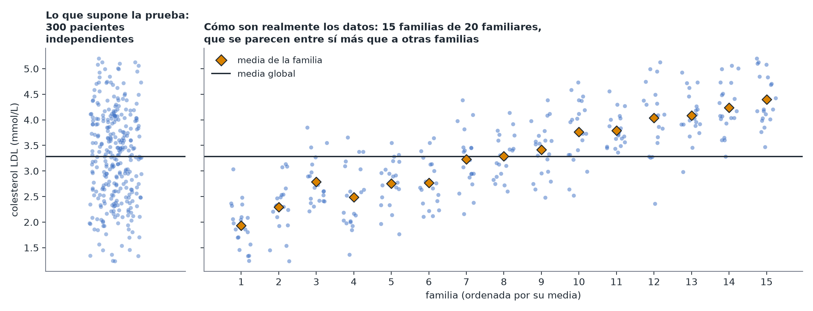
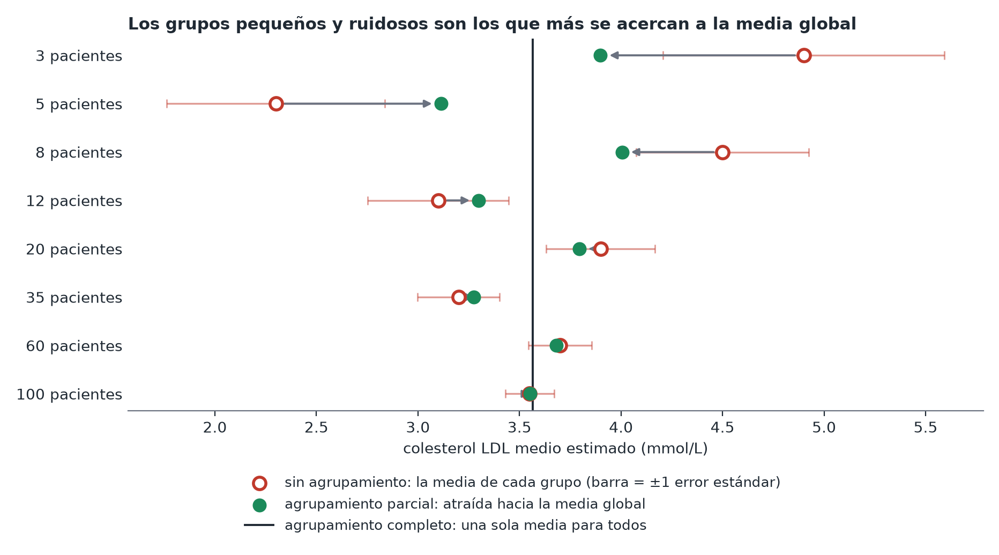

Datos agrupados y jerárquicos
En pocas palabras: cuando tus observaciones vienen en grupos naturales —familiares dentro de una familia, pacientes dentro de un hospital, medidas repetidas en la misma persona—, las observaciones de un mismo grupo tienden a parecerse más entre sí que a las de otro grupo. Las pruebas estándar que asumen que cada observación es independiente se vuelven demasiado optimistas si ignoras esto.
Por qué importa: una intuición, no solo una regla
Supón que los 300 pacientes de Mia son 20 familiares de cada una de 15 familias distintas, y que las familias difieren en dieta, entorno y trasfondo genético compartido. Tratarlos como «300 datos independientes» sobrestima cuánta información independiente hay: los familiares comparten genes y hogar, así que tienden a parecerse, y los datos se acercan más a «15 piezas independientes de información sobre familias», cada una afinada por 20 familiares. Ignorarlo hace que los intervalos de confianza sean demasiado estrechos y los valores p demasiado optimistas. (Esto es cierto incluso cuando el genotipo difiere entre familiares de una misma familia: siguen sin ser independientes, y por eso los estudios genéticos con familiares usan modelos multinivel que tienen en cuenta la familia.)

Tres estrategias, de menor a mayor complejidad
- Agrupamiento completo (complete pooling) — ignora por completo la agrupación y ajusta un único modelo con todos los datos. Es lo más sencillo. Razonable cuando no te interesan las diferencias entre grupos y solo quieres la relación global, pero aun así deberías usar errores estándar «robustos a los grupos» (cluster-robust), que corrigen el problema de exceso de confianza descrito arriba sin necesidad de otro modelo.
- Sin agrupamiento (no pooling) — ajusta un modelo con un efecto distinto para cada grupo (equivale a darle a cada grupo su propia ordenada en el origen). Es lo mejor cuando hay solo un puñado de grupos y los grupos mismos son lo que te interesa (p. ej., comparar estas 4 clínicas concretas, no las clínicas en general). Inconveniente: los grupos con pocos datos obtienen efectos ruidosos y mal estimados, y este enfoque no puede decir nada sobre un grupo totalmente nuevo que no hayas visto.
- Agrupamiento parcial / modelo multinivel (partial pooling) — las estimaciones de cada grupo se acercan («se encogen») hacia la media global, y los grupos pequeños o ruidosos se acercan más que los grandes y bien medidos. Suele ser la mejor opción cuando hay muchos grupos de tamaño desigual, o cuando quieres generalizar a grupos nuevos más allá de los que mediste. También es lo más complejo de ajustar y de explicar, así que úsalo de forma deliberada y no por defecto.

Una regla práctica
Usa por defecto el agrupamiento completo con errores estándar robustos a los grupos si la agrupación es una molestia que debes tener en cuenta, o sin agrupamiento si hay pocos grupos y son precisamente lo que te interesa. Recurre a un modelo multinivel completo cuando quieras generalizar específicamente más allá de los grupos que tienes, o tengas muchos grupos de tamaños desiguales; es razonable pedirlo de forma explícita, ya que no se sugerirá necesariamente por defecto.
La misma estructura aparece cuando los «grupos» son estudios: un metaanálisis con efectos aleatorios es un modelo multinivel cuyas observaciones son una estimación por estudio.